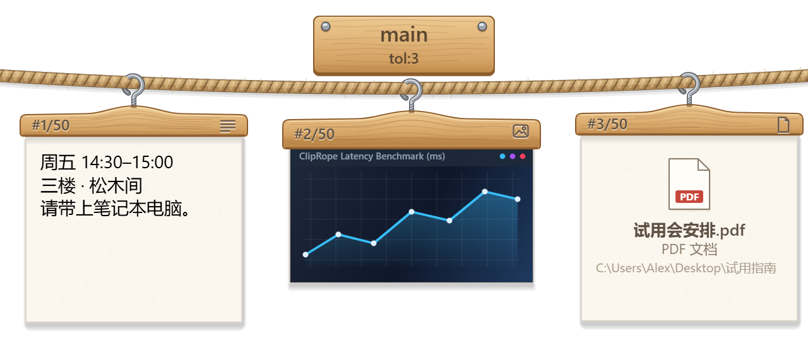

Working with cards
Learn what happens when you double-click, close or return a card.
Recover a closed Floating cardClipRope keeps the text, screenshots and files you copy on ropes. Find an earlier copy, paste it where you need it, or keep a card on your desktop.
Open demo
Learn what happens when you double-click, close or return a card.
Recover a closed Floating cardChoose where new copies go and move cards between ropes.
What happens when a rope is full?Choose a paste action, exclude apps and manage local history.
Exclude an app from capture